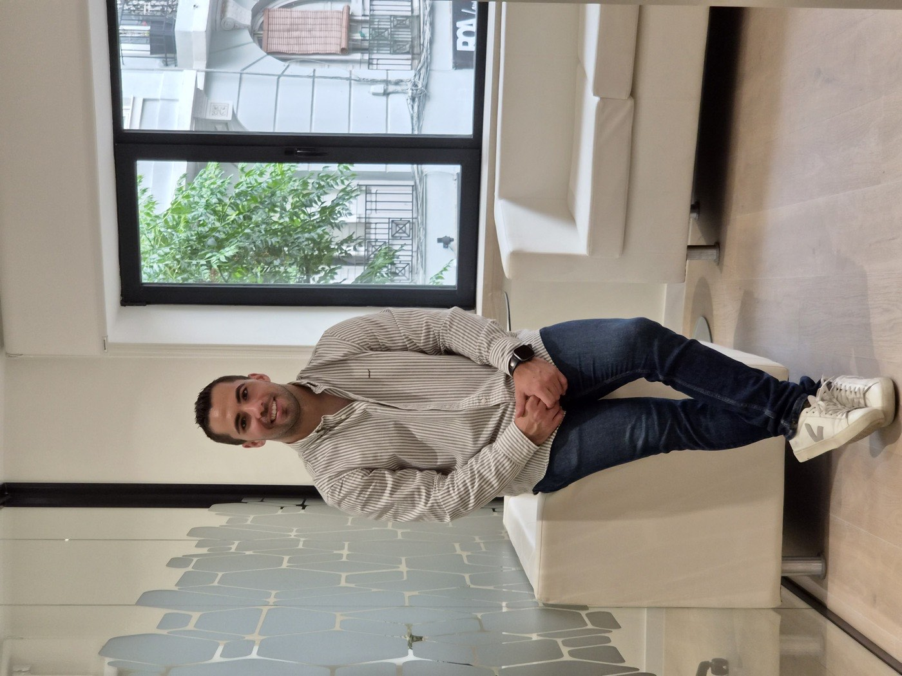
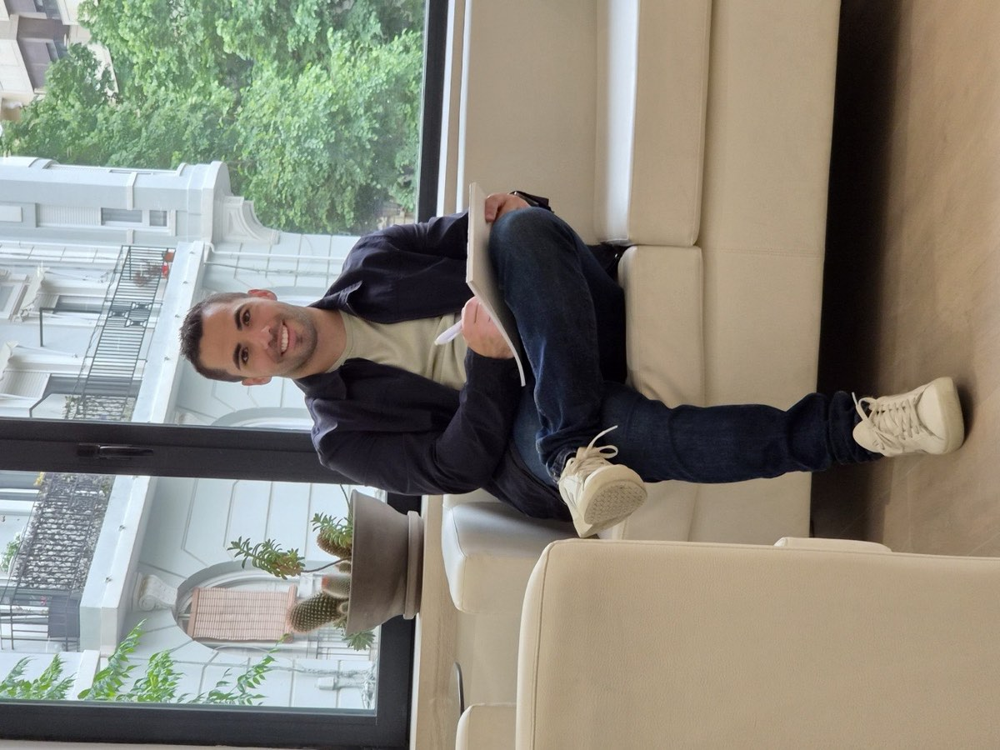

Ansiedad y estrés
Preocupación excesiva, tensión sostenida, dificultad para desconectar o sensación permanente de alerta.
Psicólogo general sanitario · Terapias contextuales (ACT) y mindfulness
Un espacio de confianza para comprender qué te ocurre, ordenar lo que sientes y aprender a tomar decisiones alineadas con aquello que de verdad te importa.

El objetivo de la terapia
Áreas de intervención
No hace falta que encaje exactamente con ninguna. Si lo que te pasa se parece, escríbeme y lo vemos.
Preocupación excesiva, tensión sostenida, dificultad para desconectar o sensación permanente de alerta.
Una mente que no frena, sobreanálisis constante y desgaste por dar vueltas a las mismas ideas.
Presión por hacerlo todo bien, necesidad de control, miedo al error y dificultad para disfrutar del proceso.
Autocrítica severa, inseguridad, comparación con otros y sensación persistente de no ser suficiente.
Rupturas, dependencia emocional, miedo al rechazo o problemas para establecer límites.
Dificultad para identificar, regular o tolerar emociones intensas sin reaccionar de forma impulsiva.
Bloqueos al iniciar tareas, falta de constancia y dificultad para estructurar rutinas que den estabilidad.
Transiciones, cambios laborales o personales, pérdidas significativas y sensación de desorientación.
Mi enfoque
La terapia es un proceso de colaboración activa, en un espacio seguro, confidencial y sin juicios. Acudir no significa que haya algo "roto": muchas veces venimos porque llevamos tiempo bloqueados, porque una situación nos supera o porque queremos relacionarnos de otra forma con nosotros mismos y con los demás.
Antes de aplicar cualquier técnica, resulta fundamental entender en profundidad qué está ocurriendo.
Psicología basada en la evidencia, estructurada en torno a las terapias contextuales de tercera generación.
Terapia de Aceptación y Compromiso (ACT). Aprender a hacer contacto con pensamientos y emociones difíciles sin combatirlos inútilmente, dirigiendo las acciones hacia lo que realmente importa.
Mindfulness clínico. Un entrenamiento de la atención, no solo una técnica de relajación, para observar la experiencia interna sin reaccionar de forma automática.
Un proceso con fases claras, acordado contigo y adaptado a tu ritmo.
Sobre mí
Psicólogo general sanitario, especialista en terapias contextuales (ACT) y mindfulness. Acompaño a jóvenes y adultos en consulta privada, y antes he trabajado en hospitalización de salud mental, en el Servicio Acompaña de prevención del suicidio de la Generalitat y en los dispositivos de respuesta psicosocial tras la DANA de Valencia.
Eso ha marcado mi forma de trabajar: entender lo que ocurre, sostenerlo cuando hace falta y acompañar procesos en los que recuperar claridad no siempre es sencillo.

Formación
Para quién es
Acompaño a jóvenes y adultos en distintos momentos vitales. Estos son los tres tipos de proceso que suelo trabajar.
Un proceso individualizado para intervenir sobre lo que te pasa ahora y sobre los patrones que mantienen el sufrimiento. Cada sesión se adapta a ti, sin fórmulas estandarizadas.
Para personas en entornos de elevado rendimiento, presión sostenida o responsabilidad: deportistas, opositores y cargos de responsabilidad o liderazgo.
Para quien, aun funcionando bien en el día a día, quiere comprender sus dinámicas internas, clarificar sus valores y tomar decisiones vitales con perspectiva.
Cómo empezamos
Eliges hueco directamente en mi calendario. Si prefieres verme antes de decidir, hay una videollamada de 15 minutos sin coste.
Una hora para comprender tu situación, valorar si encajamos y fijar el marco de trabajo.
Marcamos un ritmo que puedas sostener. Sin un número de sesiones cerrado de antemano.
Empecemos a desenredar
No hace falta que lo tengas ordenado ni que sepas explicarlo bien. Con que me cuentes por encima qué te está pasando es suficiente.